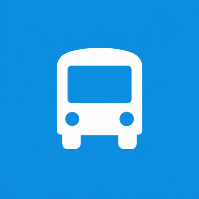

Dica 1
Chegue ao ponto de embarque pelo menos 10 minutos antes do horário previsto para embarcar com tranquilidade e evitar imprevistos.

SEGURANÇA E BEM-ESTAR
Orientações para tornar seu trajeto diário mais seguro, rápido e confortável.
Chegue ao ponto de embarque pelo menos 10 minutos antes do horário previsto para embarcar com tranquilidade e evitar imprevistos.
Em horários mais movimentados, verifique caminhos diferentes que possam facilitar seu deslocamento.
Planeje sua rota antes de sair de casa, pois evita longas esperas e garante uma viagem segura.
Fique com seu cartão de identificação ou passe de transporte na mão para facilitar a identificação no momento do embarque.
Mantenha seus pertences bem guradados durante a viagem e utilize os apoios ao se levantar ou se movimentar pelo ônibus.
Respeite os assentos preferenciais, use fones de ouvido para ouvir músicas ou assistir vídeos e colabore para manter o ônibus limpo e organizado.
Fique atento ao seu ponto de desembarque e avise o motorista com antecedência para evitar paradas bruscas e atrasos na rota.
Em dias de chuva, saia de casa um pouco mais cedo e use calçados antiderrapantes para embarcar e desembarcar com segurança.
Se você utiliza o ônibus diariamente, identifique pontos de referência próximos ao seu destino. Isso ajuda a reconhecer o momento certo de desembarcar, especialmente em trajetos novos.
Entre em contato conosco e envie algum comentários